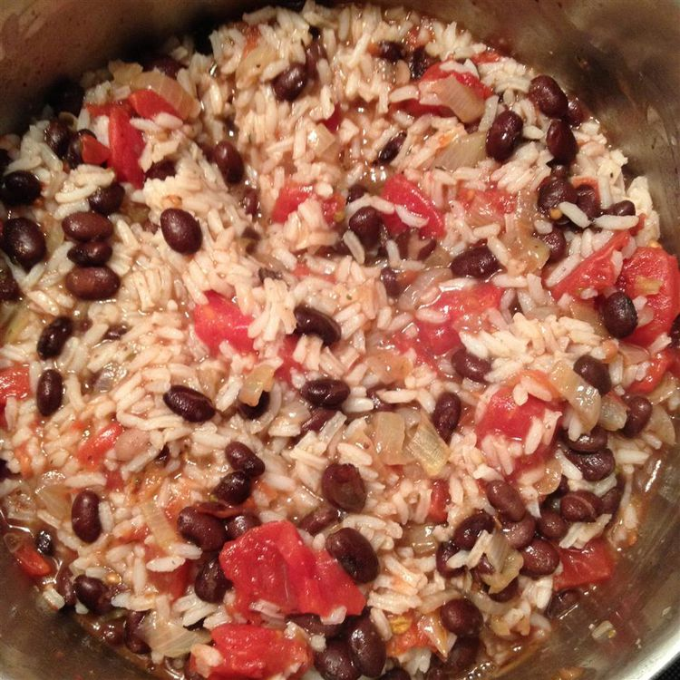
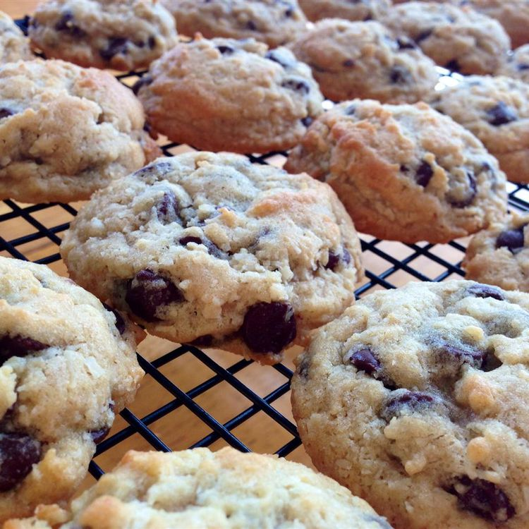
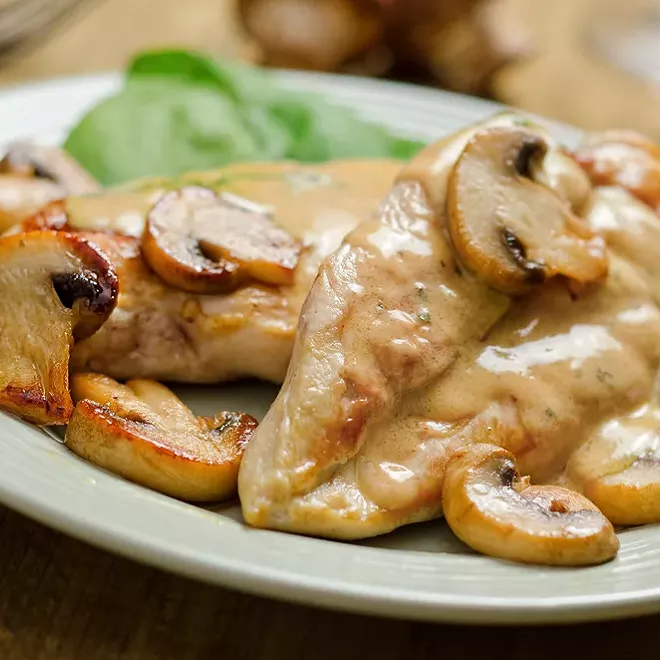
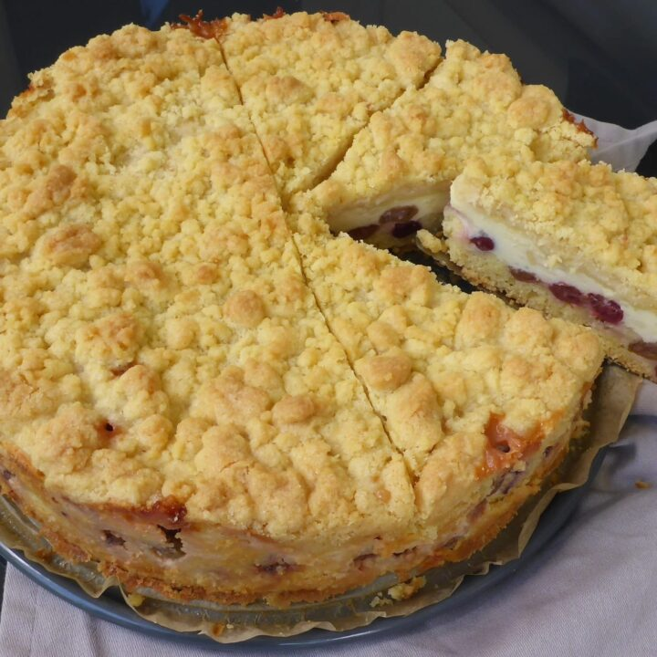

Apple Crisp
A cozy, classic apple crisp with tender cinnamon apples and a buttery oat topping.
View Recipe
Black Beans & Rice
A quick, flavorful meal with seasoned black beans served over warm rice.
View Recipe


